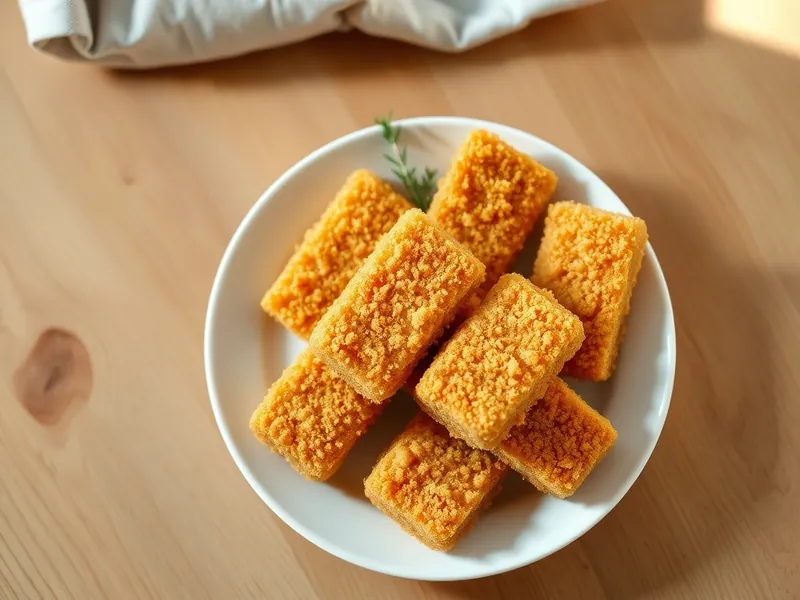

Фото: Иллюстрация ИИ, Cloudflare Workers AI
Рыбные палочки домашние в духовке
Брусочки трески в сухарях, запечённые без лишнего масла
30 мин3 порц.295 ккал на порциюБ 34 · Ж 9 · У 20Интернациональная кухня
Продукты на 3 порц.
- Треска500 г
- Яйцо куриное1 шт
- Панировочные сухари0,5 стак.
- Мука пшеничная1 ст. л.
- Растительное масло1 ст. л.
- Паприка по желанию0,5 ч. л.
- Соль2 щеп.
Как готовить
- Разогрейте духовку до 200 °C (сильный жар), застелите противень пергаментом и смажьте маслом.
- Нарежьте филе трески брусочками 2 на 7 см и посолите.
- Обваляйте каждую палочку в муке, затем в взбитом яйце и в сухарях, смешанных с паприкой.
- Выложите на противень, сбрызните оставшимся маслом.
- Запекайте при 200 °C (сильный жар) 15 минут, перевернув на середине, до золотистых сухарей.
Совет. Палочки можно заготовить впрок: обвалять, заморозить на доске, а потом печь прямо из морозилки на 5 минут дольше.